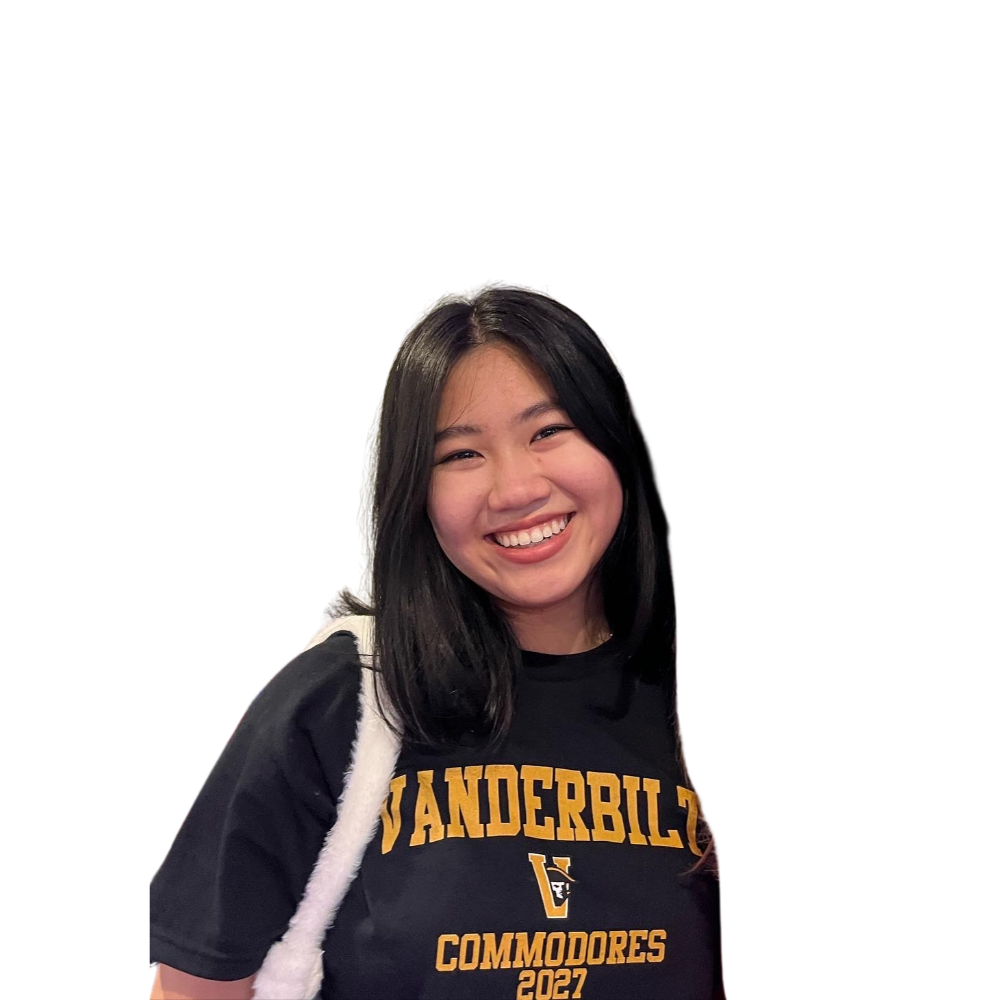
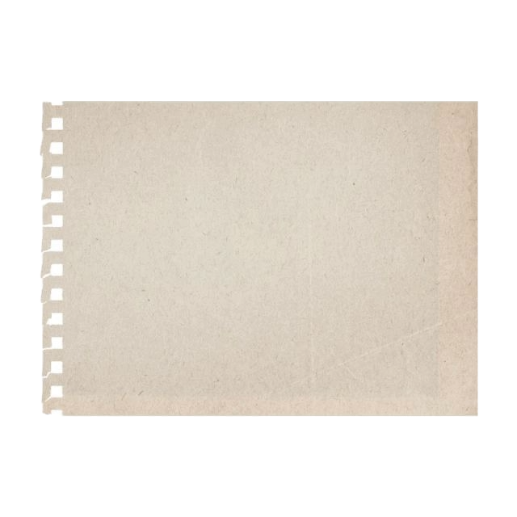
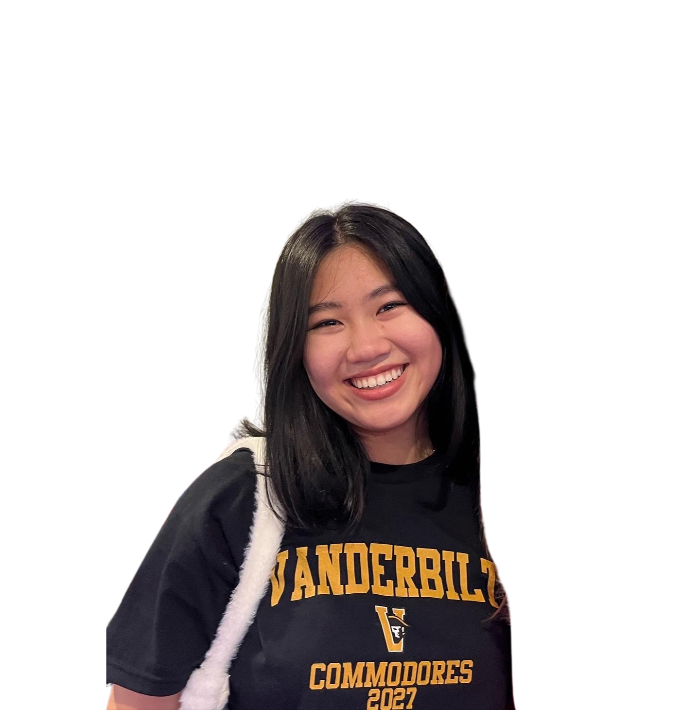
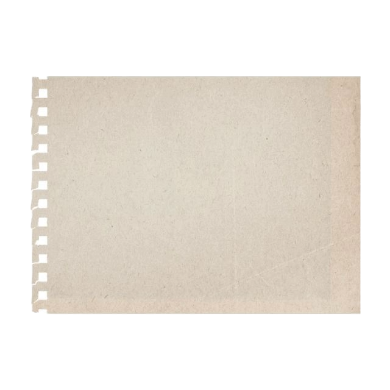

Alison Zou


 github.com/
github.com/azzou02
 linkedin.com/in
linkedin.com/in/alison-zou/


 



I’m a junior studying computer science, art, and math at Vanderbilt University. I’m
passionate about designing and building user-centered digital experiences, and I care
deeply about accessibility. I work at the Wond’ry Innovation Center, where I’ve led
user research and cross-functional collaboration on projects like improving driver
accessibility with Nissan. On campus, I’m also actively engages
as the president of
Google
Developer Group Vanderbilt &
vice president of Girls Who
Code
Vanderbilt chapter.